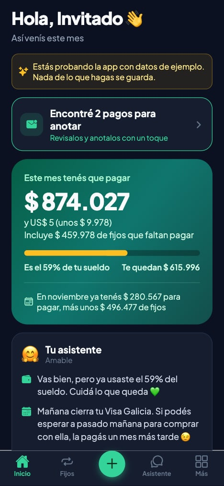

I'm a Systems Engineering student at Universidad CAECE and a full-stack developer who likes taking an idea all the way to a live product with real users. I work mostly with React, React Native, TypeScript and Node.js, and I integrate whatever the product needs: voice agents, WhatsApp, LLMs, banking data.
Soy estudiante de Ingeniería en Sistemas en la Universidad CAECE y desarrollador full stack. Me gusta llevar una idea hasta un producto online con usuarios reales. Trabajo sobre todo con React, React Native, TypeScript y Node.js, e integro lo que el producto necesite: agentes de voz, WhatsApp, LLMs, datos bancarios.
My largest project so far, Prode LineUp, was used by an entire company during the 2026 World Cup. I kept shipping fixes and new matches to production while people used it every day, including a live fix when the app outgrew Supabase's default query limit.
Mi proyecto más grande hasta ahora, Prode LineUp, lo usó una empresa entera durante el Mundial 2026. Seguí subiendo correcciones y partidos a producción mientras la gente lo usaba todos los días, incluido un arreglo en vivo cuando la app superó el límite de consultas de Supabase.
Today I'm an IT intern at Doppler, an email marketing platform, and I'm building Sorted, a personal finance app designed around how money works in Argentina.
Hoy soy pasante de IT en Doppler, una plataforma de email marketing, y estoy construyendo Sorted, una app de finanzas personales pensada para cómo se maneja la plata en Argentina.
-
Oct 2026 — PresentOct 2026 — Hoy
IT InternPasante IT · Doppler
IT team at Doppler, an email marketing platform.
Equipo de IT en Doppler, una plataforma de email marketing.
-
Jun — Jul 2026
Full-stack DeveloperDesarrollador full stack · LineUp↗
Designed, built and ran the company's World Cup 2026 prediction game end to end. Shipped 50+ production updates across the tournament's 104 matches, with Google sign-in, a live leaderboard and predictions that lock 15 minutes before kickoff.
Diseñé, construí y mantuve de punta a punta el prode del Mundial 2026 de la empresa. Más de 50 actualizaciones en producción a lo largo de los 104 partidos, con login de Google, ranking en vivo y pronósticos que se bloquean 15 minutos antes de cada partido.
-
In progressEn curso
Systems EngineeringIngeniería en Sistemas · Universidad CAECE
Undergraduate degree, Mar del Plata.
Carrera de grado, Mar del Plata.
-

Sorted↗
Personal finance app for Argentina: installments, fixed bills, cash and inflation. Logs expenses from wallet notifications, forwarded emails, receipt photos and Siri, and includes a Claude-powered assistant that answers with your real numbers.
App de finanzas personales para Argentina: cuotas, gastos fijos, efectivo e inflación. Registra gastos desde notificaciones de billeteras, mails reenviados, fotos de tickets y Siri, y tiene un asistente con Claude que responde con tus números reales.
-

Prode LineUp↗
World Cup 2026 prediction game used by an entire company for the whole tournament. Scoring, live leaderboard, all 12 groups and the full knockout bracket with penalty shootouts.
Prode del Mundial 2026 que usó una empresa entera durante todo el torneo. Puntaje, ranking en vivo, los 12 grupos y el cuadro eliminatorio completo con penales.
-

AI Voice Booking AssistantBot de turnos por voz↗
Phone agent that books appointments during the call and confirms them on WhatsApp. Checks availability in real time, prevents double bookings under concurrent calls, and verifies every webhook signature.
Agente telefónico que da turnos durante la llamada y los confirma por WhatsApp. Consulta disponibilidad en tiempo real, evita turnos superpuestos con llamadas simultáneas y verifica la firma de cada webhook.